Sua empresa aparecendo para quem compra.
Pare de desperdiçar dinheiro com criativos sem propósito. Está na hora de criar uma estratégia completa e validada para vender através do digital.
- 10.000+ horas de produção
- 6+ anos no digital
- BR & EUA clientes em dois países
O que você recebe.
Uma operação de aquisição validada. Alinhamos estratégia, produção audiovisual intencional e gestão de tráfego focada em atrair o cliente ideal para o seu produto/negócio.
Um plano claro de como aparecer.
Você recebe um diagnóstico do seu momento, a narrativa certa para o seu público e uma direção de imagem que sustenta o preço que você cobra. Sem achismo.
- Posicionamento
- Linha editorial
- Direção de imagem
- Visão de gestão
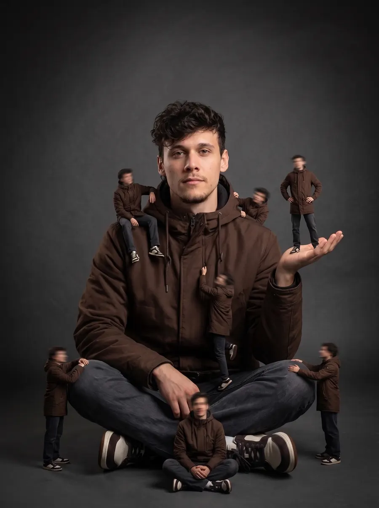
Conteúdo pronto para rodar.
Você recebe vídeos, Reels e criativos com roteiro, captação e edição. Tudo pensado para segurar atenção nos primeiros segundos e fazer a pessoa querer o que você vende.
- Direção e captação
- Roteiros
- Edição dinâmica
- VFX
Seus vídeos na frente de quem compra.
Campanhas no Meta Ads e Google Ads que levam seus melhores conteúdos até o público certo e trazem essas pessoas direto para o seu WhatsApp ou para o seu comercial.
- Meta Ads
- Google Ads
- Campanhas de captação
- Teste de criativos
- Acompanhamento
Sua empresa ainda está fora do Google?
Sua empresa aparecendo no mapa para quem procura o que você vende, perto de você.
- Perfil otimizado
- Avaliações
- Busca local
Google Meu Negócio
Empresários que confiaram no nosso trabalho.
Shorts direto do canal — estratégia, bastidores e resultado em menos de 60 segundos.
Passaram na minha timeline.
Artistas e criadores que já passaram pela minha edição, captação ou projetos audiovisuais.
-
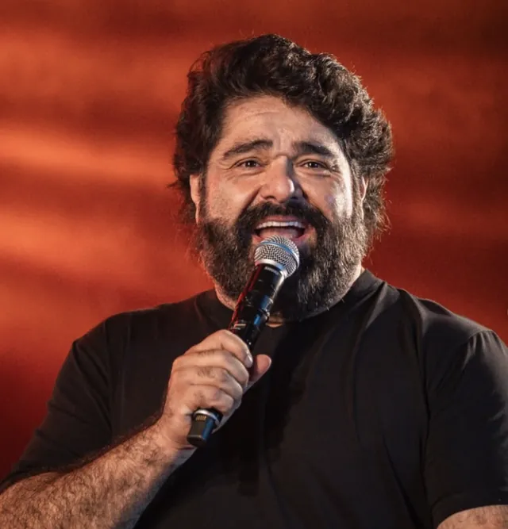
César MenottiCantor sertanejo -
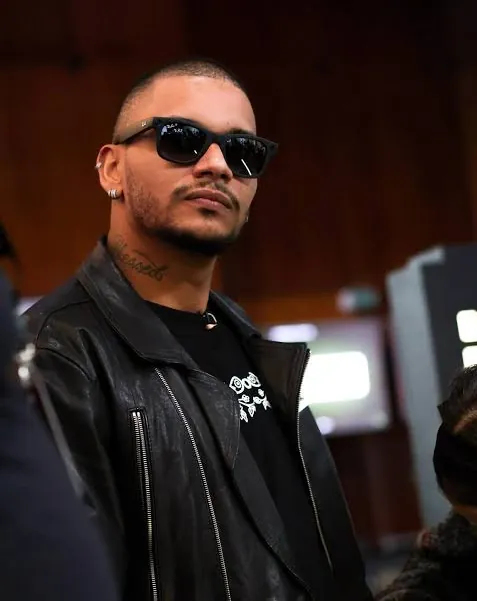
Cris GuedesPresidente da FURIA FC -
Jonathan NemerHumorista e criador de conteúdo
-
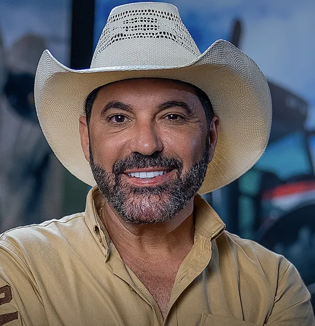
Edson CadoriniDupla Edson & Hudson -
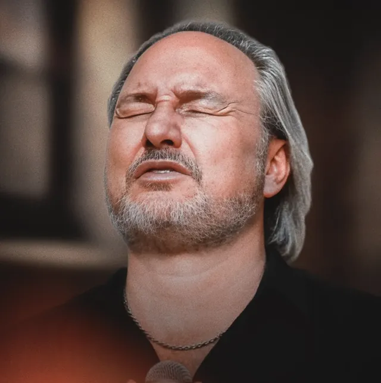
David QuinlanCantor -
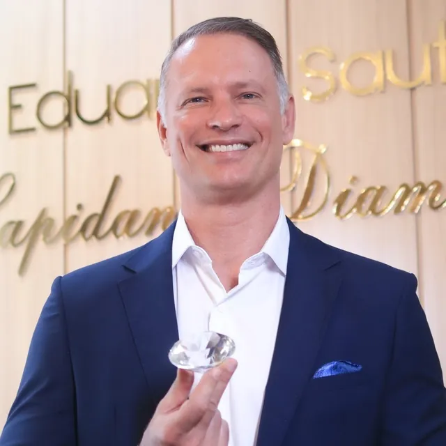
Dr. Eduardo SauterCirurgião plástico, Cuiabá -
AoRaboniEstética automotiva
-
O próximo frame pode ser o seu.
Quero conversar
Pessoas que somei.
Especialistas e empresários com quem trabalhei direto, no Brasil e nos Estados Unidos.
-
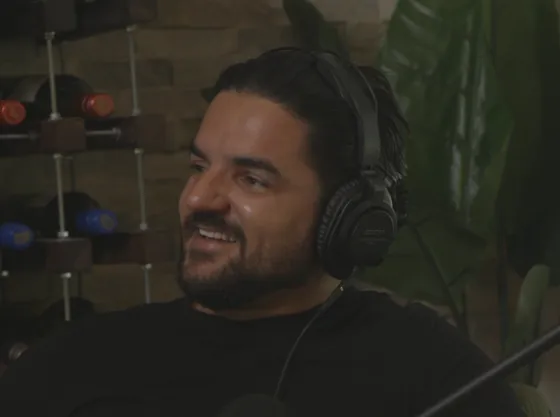
Flórida, EUAPedro Stuart
Investimento em construção e imóveis
Posicionamento, criativos de captação e presença digital para investimentos imobiliários nos Estados Unidos.
-
Orlando, EUA
Pedro Realtor
Corretor licenciado e business broker
Conteúdo de autoridade e campanhas que conectam investidores brasileiros a oportunidades na Flórida.
-
Flórida, EUA
Joyce Santana
Mercado imobiliário e marca pessoal
Edição dos conteúdos para as redes e sugestões estratégicas do que e como gravar.
-
Brasil
Tiago Dallabrida
Estratégia comercial B2B
Edição completa de curso e treinamento, além de criativos para as redes sociais.
-
Brasil
Matheus Dallabrida
Terapia e comportamento
Construção de audiência, conteúdo aprofundado e funis de captação para programas de transformação emocional.
-
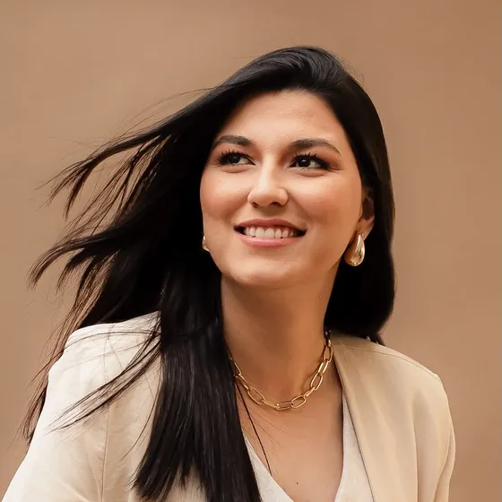
BrasilNerissa Di Angelo
Parceria criativa
Edição de criativos para os clientes dela e captações audiovisuais em parceria.
Marcas que já passaram por aqui.
Construtoras e grupos de investimento nos EUA, clínicas, indústrias e instituições do Mato Grosso.
- CIG GroupConstrução e investimentos (EUA)
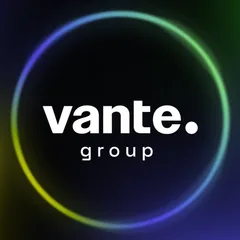
Vante GroupGrupo empresarial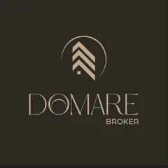
Domare BrokerMercado imobiliário- LucrattivaContabilidade
- Hostins EquipamentosIndústria
- ACENM e CDLAssociação empresarial
- SEST SENATInstituição de ensino
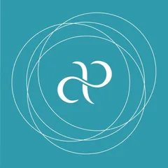
Clínica ARPEOdontologia
- Clínica ÍmparOdontologia e saúde
- HarmonizeEstética e harmonização
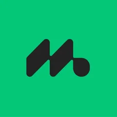
Mutum ContabilidadeContábil e fiscal- Decore MutumArquitetura e interiores
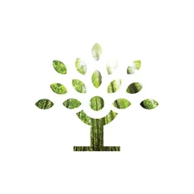
RL ConsultoriaEngenharia ambiental- ConectaSoluções imobiliárias
- InoveConsultoria ambiental e agroflorestal
Prazer, Kenedy.
Nasci em São José do Rio Claro (MT), o caçula de quatro irmãos. Minha maior aula de gestão e trabalho duro não veio de livros, veio de casa: minha mãe, gari e uma verdadeira guerreira, foi pai e mãe para nós quatro.
Foi com essa base de resiliência que construí minha trajetória. Antes de escalar negócios no digital, fui secretário gestor de uma escola estadual, onde mergulhei em administração e liderança. Ali eu aprendi na prática como processos, metas e pessoas fazem uma engrenagem funcionar.
Hoje, aos 22 anos, transformei essa bagagem em um ecossistema de vendas. Cuido de projetos no Brasil e nos Estados Unidos. Planejando, editando vídeos e fazendo a gestão de tráfego pago. O resultado é uma operação completa que vai da estratégia ao anúncio rodando, e o lead se tornando cliente.
- Origem
- São José do Rio Claro, MT
- Base
- Nova Mutum, MT
- Atende
- Brasil e Estados Unidos
Método KS.
Do diagnóstico à campanha no ar, em quatro passos.
-
1
Diagnóstico gratuito
Analiso seu momento, público e oferta. Você sai da call com um plano claro, mesmo que não feche.
-
2
Planejamento
Defino pautas, ganchos e calendário. Você grava com segurança, sem improvisar.
-
3
Produção
O material bruto vira conteúdo com ritmo, identidade visual e acabamento profissional.
-
4
Tráfego e escala
Os melhores conteúdos viram anúncio e trazem clientes reais para o seu WhatsApp.
Enquanto você espera, seu concorrente aparece.
Cada semana sem estratégia é uma semana em que outro profissional da sua área está ocupando o espaço que poderia ser seu. O melhor momento para começar foi há 3 anos, o 2º melhor momento é agora!!
Quero meu diagnóstico gratuitoDiagnóstico gratuito.
Me conta um pouco sobre o seu negócio e eu te digo por onde começar — sem compromisso.